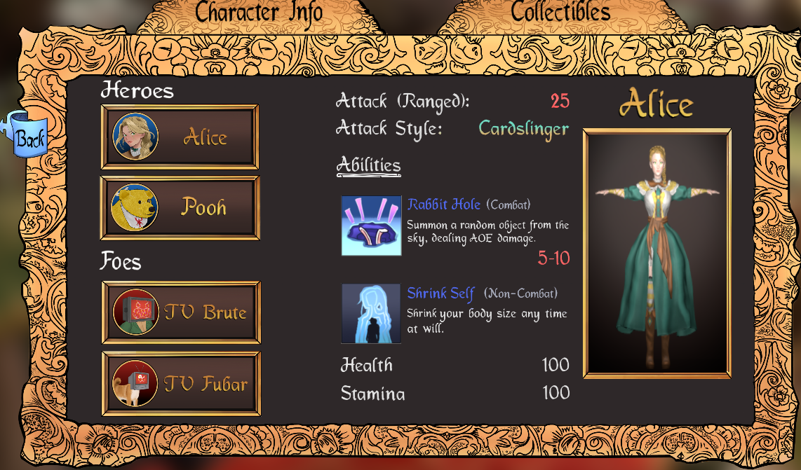
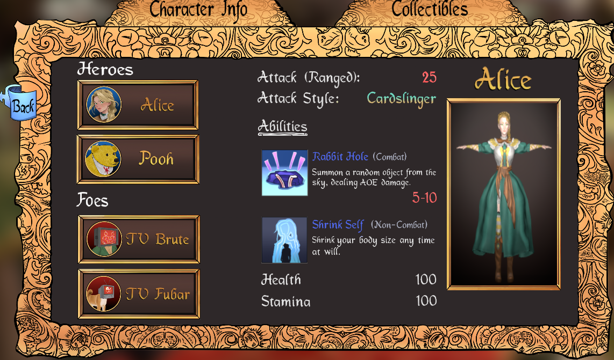

Below are gifs recorded of the game engine, demonstrating the various menus that I have put together over the course of this massive project.
Logos at the start, I did this using the Animations tool.

Opening title sequence, this uses the Animations tool for fading out of the title
into the main menu transition.

The main menu screen. The sign flipping up, like a popup book, was done via the Animations tool.

The Credits book. I took the asset of the book, cut it in half, making a left and
right page. Then used the Animations tool in Unreal Engine to put together the animation of
the book opening and closing.

The Settings book. To animate this book, I did the same as I did for the Credits book.

The file select screen. While this was cut from the final release. Using the Animations tool for the effect
to give it the slide in and bounce effect, making it
feel like it was on rope that stretched as it moved down.

The pause menu. Contains logic for stopping time, which ended up breaking delay nodes within
blueprint graphs also freeze. To get around that I added a "True Delay" Macro, that was found on a forum post,
to worked around that.

The Select Screen. It was an interesting challenge to make this screen. I had never attempted
to have a 3D object be included in the menu before. Using a SceneCaptureComponent2D, a Canvas Render Texture, and a lot
of tweaking the camera’s settings finally got it working. Learning how to achieve that, will absolutely be a helpful
skill in the future.

Collectibles screen. Unreal Engine does a lot of things well.
But List Views are not one of them. the process for trying to get a scrolling
list into the game was very painful. Unlike Unity, which has a mostly self-contained
implementation, Unreal Engine's List Views were absolutely a pain to get working.
Requiring 4 different files.
A struct with the data you want to have in the list,
A List Template, what each entry item will have.
A List View Data Entry, used in the List Template to build part of the struct.
Finally the Widget where you use all of them.
Putting all that together you now have a list view. That was a very slow
process to figure out how exactly to use all those in unison to make it.
But eventually it was figured out.

The Character Swapping Menu. It took awhile to solidify a design for it.
And took even longer to put it all together. There were a lot of ridiculous, illogical issues
that I had with CommonUI not moving a controllers focus to other cards. I think it involved
how much of one card was covering the other, if too much was covered, it COULD NOT, be
highlighted. Regardless of the Navigation rule, be it Escape or Explicit, it would not
receive the controller's focus. This theory doesn't make much of any logical sense,
but it appeared to be the cause of that particular issue.
The card popping up and down was done by adjusting it's position based on
the card's On Hover, and On Unhovered. To emulate the feel of thumbing through a deck of cards.
The cards rotating was done with a custom function as the navigation. And used a combination of
a Button Array and rotating. Controller focus was passed between the different cards by
incrementing or decrementing an index. Using that index to set the focus of a controller,
cursor position, and rotation. That way the game would remember where you were in the menu
from last opening.

I built up the foundation to cover all the needs I could think of at the start, having multiple stacks
to push menus onto and making sure the naming of the various functions matched the appropriate stack name.
Development of the various menus was rapid, getting various placeholders and proof of concepts
in place to better show the typeof assets needed to fill in the menus themselves. My concept for what
the select menu could be VS the artists final drawings.
 

CommonUI definitely has it's quirks for working with. However, over the course of
this project, I cannot begin to think how much more difficult it would have been to build
a lot of the features CommonUI has from the ground up. For the project timeline we had,
that was not really an option. It was Hisham Ata,
one of our instructors during my course at Toronto Film School, who pushed me into CommonUI.
I am very glad he did so. The amount of time still saved by using it, would be hard to calculate.
Through term 6, there were some who I had the pleasure of working closer with then others.
Whether we had to thug it out together or just because we worked along side one another,
I want to credit them.
"10 Minute Mark" Mark Vale.
Developer Design Lead.
For all the late, near sleepless nights. Laughs, dedication, and insight. I do not
think we as a group would have survived had he not have been there.
Dan Baker
Who at the start of this project, dug into UI with me. We both researched CommonUI
and other forms of UI related tools within Unreal Engine at the start. While he moved
away from UI to a more generalist role, I am grateful for the work done in the beginning.
And for assisting greatly in exposing various features of the player so I could make the HUD
work.